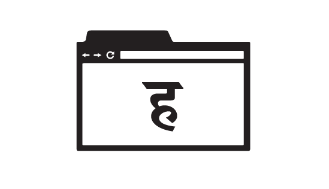
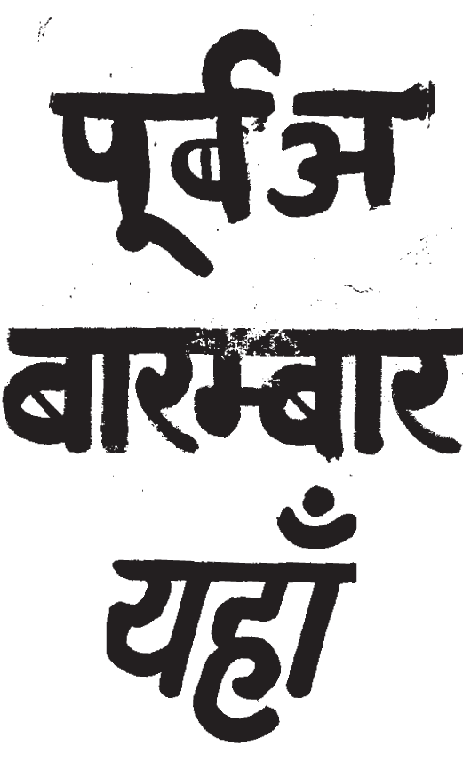
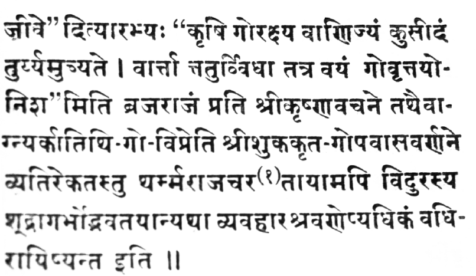

digital typolitics of devanagari
understanding difference in the browser
catherine leigh schmidt
degree project, spring 2014
1. What is typolitics?
type + politics = typolitics
Typolitics is a word I invented to describe the complexity of politics surrounding typography. Type is ideological; it carries historical baggage. Sometimes graphic designers have a hard time acknowledging this beyond the intentions of the typographer who made the font.
Far from being the neutral medium by which we read letters, type can raise questions of power and access.
2. What is Devanagari?

Devanagari is the script in which Hindi, Sanskrit, Marathi, and Nepali are written. Hindi is the fourth-most spoken language in the world, just below English.
Script
- Latin
- Cyrillic
- Devanagari
- Hangul
- Bengali
- Greek
- Hiragana
Language
- English, Spanish, etc
- Russian
- Hindi, Sanskrit
- Korean
- Bengali
- Greek
- Japanese
Scripts are writing systems. They are the medium through which we understand language.
In theory, you could write any language in any script. Because of a colonial relationship, English is often written in Devanagari in India. But each script remains uniquely able to best describe the language it was designed for.
The internet, like computers, was designed with the Latin script in mind. Some scripts have little or no support on the internet. Speakers of certain languages, like Urdu, have no choice but to write on the internet in the Latin script.

Creating type for Devanagari has always been an act of translation. Devanagari was a calligraphic script until colonial interests created typography in the 18th century. Characters in Devanagari are not discrete entities; they interact with each other.
Above is a specimen of letter-pressed type. The breaks in the signature upper cross-bar which connects words in Devanagari speak to the medium. Letterpress was designed for Latin, a script where the letters don't connect with each other.
3. What are digital typolitics?
Digital typolitics describes the decisions that shape typography in the digital world. Despite the democratizing force of the internet, the digital tools were created — designed — by people.
The reason that computers more readily accept some scripts and not others is the result of choices that favored English speakers.
4. What does this have to do with graphic design?
I think that designers, empowered with technological skills, have the ability to shape the way we understand scripts on computers and on the internet in particular.
Browser-based technology is good enough now that nothing should hold Devanagari back on the web. I propose to explore high-quality typography for Devanagari on the web.
TO DO
- Interview Hindi speakers (RISD students!) state-side. How do they use the web?
- Gain a deeper calligraphic understanding of Devanagari in order to make typography.
- Draw web-friendly type for Devanagari. Draw a latin typeface that plays nice.
- Explore formally with said typeface on the web. Use existing typefaces also.
- Interview Peter Bil'ak, Satya Rajpurohit, and John Cayley (Brown)
- Build own browser, play with possibilities. Can it support Devanagari? Can it do a better job of supporting Devanagari than existing browsers?
- Build browser plug-in which makes existing Devanagari type more legible.
- Track progress on pheel.us/deva